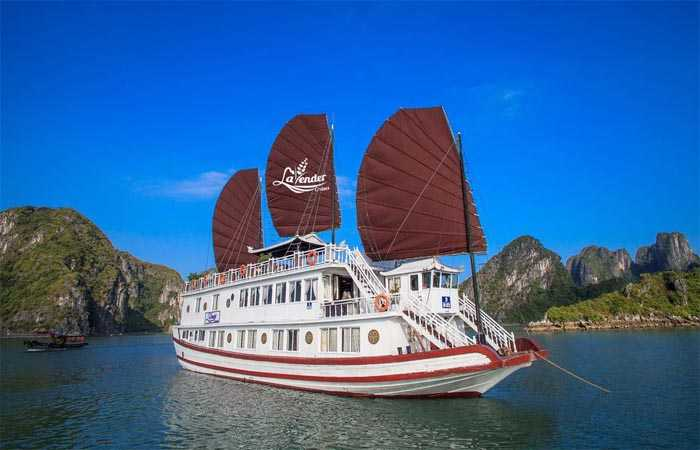
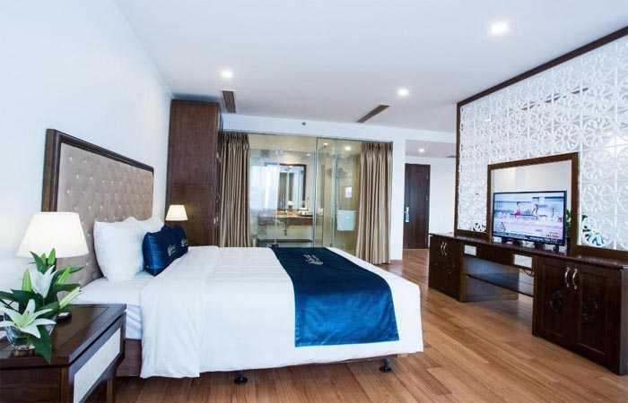
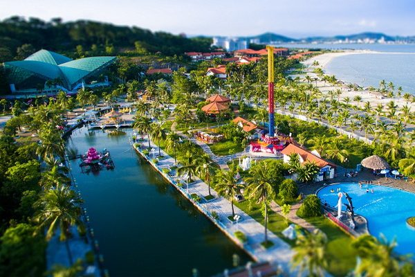
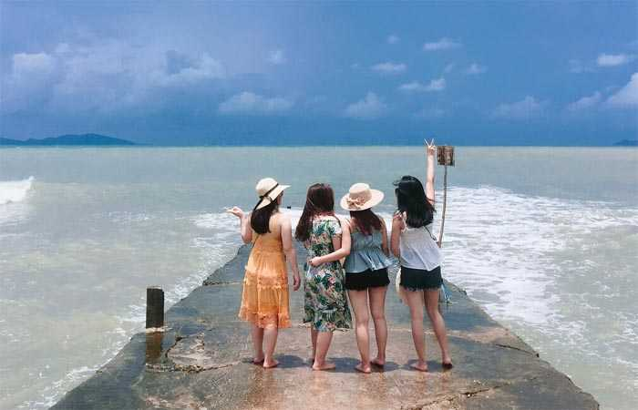
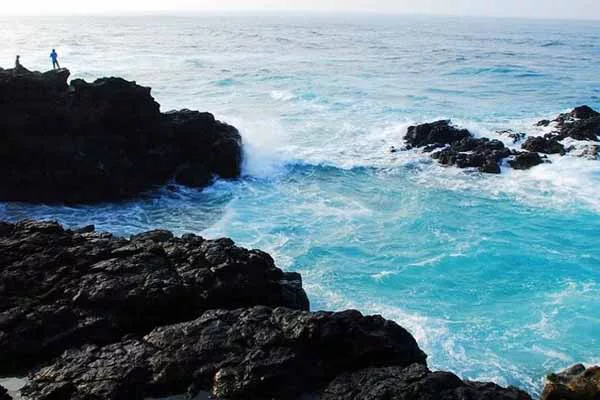
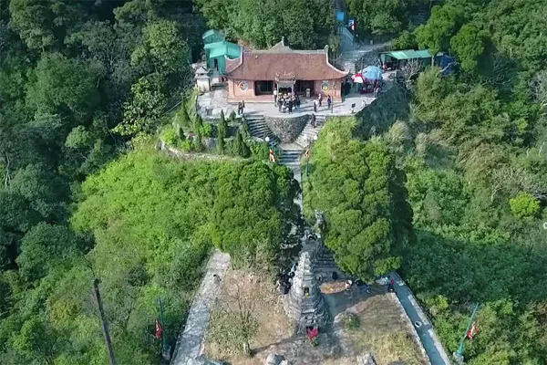
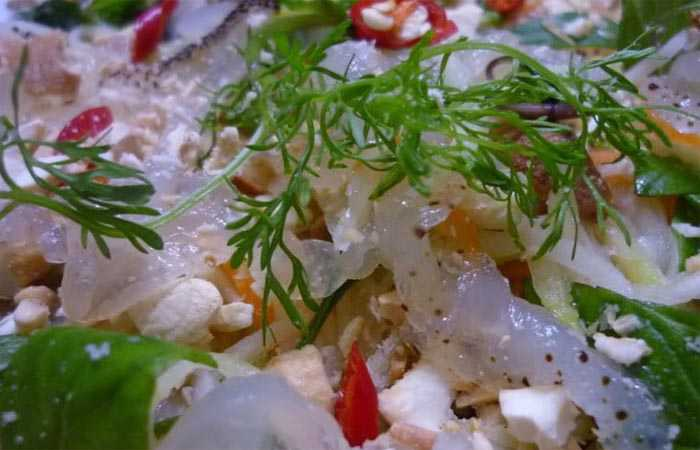
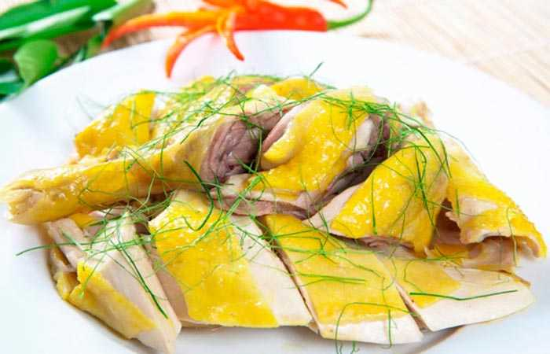

Du lịch Quảng Ninh đang ngày một phát triển với nhiều thắng cảnh đẹp như Vịnh Hạ Long vẻ đẹp nên thơ, hữu tình, bãi biển trà cổ hoang sơ và đảo cô tô đẹp ngút ngàn….
Bạn đang có kế hoạch đi du lịch Quảng Ninh, hãy chuẩn bị kỹ lưỡng hành trang, lịch trình kiến thức cần thiết như cách đi lại, địa điểm vui chơi, ăn uống, nghỉ ngơi… Trong bài viết này Du Lịch Việt sẽ chia sẻ cho các bạn những thông tin hữu ích trên.
I. Giới Thiệu Tổng Quang Về Quảng Ninh.
Là một tỉnh thuộc miền Đông Bắc Việt Nam, tỉnh Quảng Ninh có nhiều ấn tượng nhờ những đặc điểm:
+ Vừa là một tỉnh công nghiệp, vừa là một nơi thu hút đông đảo khách trong ngoài nước với tiềm năng du lịch lớn.
+ Có bề dày lịch sử với những chiến công hiển hách còn đậm dấu ấn
+ Là một vùng đất cổ xưa với dấu vết của người tiền sử.
+ Tăng trưởng về nông nghiệp và có nhiều cửa khẩu thông thương hữu nghị.
+ Thành phố, thị xã phát triển nhanh, người dân sống với giá sinh hoạt dễ chịu, họ dễ mến và luôn hiếu khách.
– Quảng Ninh có rừng và núi đồi, vừa có đồng bằng, vừa có biển đẹp với bờ biển dài 250km. Vịnh Hạ Long, di sản thiên nhiên thế giới với hàng trăm di tích lịch sử văn hoá tự nhiên là một trung tâm du lịch lớn của Việt Nam.
– Các di tích khảo cổ ở Tấn Mài, Cửa Lục và một số đảo cho thấy cách nay khoảng 300.000 năm trước thuộc sơ kỳ đồ đá cũ ở đây đã có con người sinh sống.
II. Thời Điểm Lý Tưởng Để Du lịch Quảng Ninh.
Là một tỉnh có ngành du lịch phát triển, với nhiều điểm thăm quan phù hợp với sở thích của từng du khách, vì vậy bạn có thể đến Quảng Ninh bất kỳ thời điểm nào trong năm.
Nếu du khách muốn dc tắm biển thì phải chọn thời điểm mùa hè từ tháng 4 – tháng 9 là lý tưởng, lúc này thời tiết đẹp, trời xanh, gió mát, bạn sẽ tha hồ thưởng ngoạn cảnh đẹp và ngâm mình trong làn nước trong xanh.
Khi đi du lịch bạn cần theo dõi thêm tình hình diễn biến thời tiết để chuyến đi trở nên thuận lợi.
III. Hướng Dẫn Đi Đến Quảng Ninh.
Là tính có ngành kinh tế phát triển, hạ tầng hiện đại, du khách có thể đến đây bằng nhiều phương tiện khách nhau.
Tàu hoả: Du khách tỉnh khác đi tàu hoả có thể ra ga địa phương mua vé hoặc mua vé trực tuyến tại website dsvn.vn và điểm dừng chân là ga Yên Viên hoặc ga Hạ Long.
Xe khách: Với du khách thủ đô Hà Nội có thể đến bến xe Giáp Bát, Mỹ Đình,… mua vé xe khách để đi Quảng Ninh, một số hãng xe uy tín chất lượng đang khai thác chặng này như: Kumho Việt Thanh, Đại Phát, Đức Phúc, Phúc Xuyên,…với giá vé chỉ tầm 100.000 đồng/người/ chặng.
Xe máy: là một phương tiện được nhiều phượt thủ lựa chọn bạn có thể đi theo nhiều lối khác nhau tuỳ theo địa điểm khởi hành”
+ Hướng 1: du khách từ Hải Phòng qua Bến Rừng (đường số 10) du khách có thể dừng lại nhìn dòng sông Bạch đằng lịch sử, thường được ca tụng một cách nên thơ là “bát ngát sóng kình muôn dặm, thướt tha đuôi trĩ một màu”. Từ đây du khách sang đò Chanh, đặt chân đến vùng đất Hà Nam trù phú.
+ Hướng 2: Từ tp Hải Dương theo quốc lộ 5, du khách sẽ đến thị trấn Đông Triều. Tương truyền đây là cửa ngõ phía Đông của triều Trần và cũng là cửa ngõ của Phật giáo, với hai thủ đô lớn là thủ đô hành chính thời xưa, cũng là nơi san định các bộ kinh bổn của Quỳnh Lâm Viện và thủ đô của tư tưởng phật giáo học: chùa Yên Tử, nơi khởi phát bộ ba vị sư tổ vĩ đại nhất của phái Trúc Lâm, trong đó có vua Trần Nhân Tông.
+ Hướng 3: Từ Lục Nam, Lục Ngạn, Sơn Động qua Hoành Bồ, Ba Chẽ… qua đường số 279, du khách có thể thưởng thức hai thứ rượu thuốc đặc chế của địa phương.
+ Hướng 4: Từ Tp Bắc Ninh ngược đường số 18, du khách sẽ vượt qua một số địa danh và di tích văn hoá lịch sử như Phả Lại, Lục Đầu Giang, Kiếp Bạc và Côn Sơn để đến “khu Bốn” Đông Triều.
Với đường số 4B, du khách từ Lạng Sơn đi qua mỏ than Na Dương, huyện Đình Lập rồi xuôi về huyện Tiên Yên. Từ đây, du khách có thể toả đi về các huyện thuộc vùng Đông như Bình Liêu, Quảng Hà,m Móng Cái.
IV. Khách Sạn Quảng Ninh Lý Tưởng Cho Du Khách.
Là một tỉnh du lịch nổi tiếng, với nhiều thắng cảnh và di tích lịch sử, để có thể thưởng thức trọn vẹn phong cảnh và con người nơi đây. Công việc đầu tiên của du khách khi đặt chân đến vùng đất mỏ là tìm về khách sạn, nhà nghỉ để nghỉ ngơi và chuẩn bị cho hành trình khám phá.
Theo kinh nghiệm của Du Lịch Việt, du khách nên chọn lựa những khách sạn gần với địa điểm du lịch của mình để tiện bề đi lại. Dưới đây là một số khách sạn chất lượng, tại trung tâm các khu du lịch bạn có thể tham khảo.
1. Maxshare Hotels & Serviced Apartments
Là khách sạn chất lượng, toạ lạc tại địa chỉ Căn HA2-1, Khu Liên Kết Thương Mại Little Việt Nam, Phường Hùng Thắng, tp Hạ Long, chỉ cách cảng Tuần Châu tầm 4km.
Tự tiện ích ở đây là khách sạn có ghế ngồi, phòng tắm vòi sen riêng tại mỗi phòng giúp cho bạn có thể nghỉ ngơi, thư giãn sau chặng đường dài. Bên cạnh đó là những dịch vụ tiện ích như lễ tân 24/24, chổ đậu xe, wifi miễn phí.
Khi ở tại khách sạn này du khách có thể đi câu cá gần đó, đi tản bộ dưới con đường đầy lãng mạn. Nếu muốn đi xa hơn bạn có thể thuê xe máy tại khách sạn để đến những khu vui chơi Vincom Plaza, cáp treo nữ Hoàng, một tiện nghi lớn là khách sạn gần với sân bay Cát Bi cách đó 33km.
2. Halong Lavender Cruise

Là một loại khách sạn khá đặc biệt hiếm có ở các khu du lịch khách. Khi du lịch Hạ Long bạn có thể trải nghiệm khách sạn nằm ngay trên tàu. Khách sạn Halong Lavender Cruise nằm ở bến phà Tuần Châu, Hạ Long đặc sắc với chiếc thuyền buồm bằng gỗ truyền thống, chạy dọc theo vịnh Hạ Long.
Sự đặc sắc ở đây là bạn sẽ được nghỉ ngơi tại phòng có dạng cabin, phòng tắm riêng biệt, bữa ăn phục vụ những món ăn đặc sản hấp dẫn. Mỗi phòng đều có máy lạnh. Nhiều tiện ích nước uống, áo phao dịch vụ lễ tân chu đáo.
Cạnh đó là những dịch vụ thư giãn, massage, dịch vụ vui chơi giải trí câu mực, bơi lội. khách sạn sẽ di chuyển qua 2000 hòn đảo lớn nhỏ được hình thành do tự nhiên, kiến tạo địa chất lớp đá vôi… Trên khách sạn du khách có thể chiêm ngưỡng vẻ đẹp này.
3. Khách Sạn Song Loc – Luxyry.

Là khách sạn tiện nghi tiêu chuẩn 4 sao, giá thành phải chăng. Toạ lạc tại số 11 Đường Tiên Ông, Đông Hùng Thắng 1, Phường Bãi Cháy, tp Hạ Long. Bạn chỉ mất 6 phút để đi bộ ra biển. Khi ở tại khách sạn này bạn sẽ được nghỉ ngơi thư giãn với hồ bơi trong nhà, máy bơm nhiệt và quầy bar trong khuôn viên.
Sự tiện ích của khách sạn như chổ đậu xe, wifi free, tivi màn hình phẳng, phòng tắm riêng, lễ tân phục vụ 24/24 ân cần chu đáo. Bên cạnh đó khi ở tại đây bạn có thể dễ dàng đi đến Halong Marine Plaza cách đó 800m để mua sắm, hay ra cảng Tuần Châu du ngoạn cách 5km hoặc đi cáp treo nữ Hoàng cách 5km.
4. Ha Long Park Hotel
Là khách sạn tiện nghi được nhiều du khách đánh giá cao. Toạ lạc tại Cô Tiên, Bạch Đằng, tp Hạ Long. Khi ở đây bạn sẽ dễ dàng tiếp cận các tiện nghi nổi tiếng, khám phá nhiều khu vui chơi giải trí của thành phố Hạ Long như chợ Hạ Long 5 phút đi bộ, trung tâm thương mại Vincom 5 phút đi bộ và nếu du khách muốn đến vịnh Hạ Long có thể thuê xe máy và đi tầm 20 phút.
V. Những Địa Điểm Du Lịch Quảng Ninh Không Thể Bỏ Qua.
Sau khi đã có chổ nghỉ ngơi ổn định, du khách có thể an tâm hành trình khám phá vùng đất mỏ Quảng Ninh. Dưới đây là những địa danh du lịch Quảng Ninh không thể bỏ qua.
1. Vịnh Hạ Long.
Khi nhắc đến du lịch Quảng Ninh, nhiều du khách sẽ nghĩ ngay đến Vịnh Hạ Long, một vịnh biển đẹp nhất Quảng Ninh nhờ sở hữu di sản thiên nhiên thế giới được tổ chức UNESCO công nhận với những cảnh đẹp ngút ngàn mà thiên nhiên đã ban tặng.
Vịnh Hạ Long nổi tiếng với những hang động đẹp, tráng lệ như động Thiên Cung, hang trinh nữ, hang Sửng Sốt kết hợp với nhiều bãi tắm đẹp khiến cho vịnh trở thành điểm đến không thể thiếu trong các hành trình tour du lịch Hạ Long.
2. Đảo Tuần Châu.

Là địa điểm du lịch nổi tiếng của tỉnh Quảng Ninh, có cảnh đẹp thiên nhiên ngút ngàn. Đảo Tuần Châu được nhiều doanh nghiệp đầu tư phát triển thành khu du lịch, nghĩ dưỡng thu hút nhiều lượt du khách thăm quan. Trên những ngọn đồi thoai thoải và con đường dài 2km nối đảo với đất liền trở thành một thiên đường du lịch.
2. Đảo Cô Tô.
Là một hòn đảo mang vẻ đẹp hoang sơ. Đến với Cô Tô du khách sẽ được thư giản thoải mái giữa một không gian bao la, với bờ cát trắng trải dài, bên ngoài là bờ biển trong xanh. Cô Tô sớm trở thành địa danh du lịch cuốn hút hàng ngàn lượt thăm quan mỗi năm.
Khi du lịch đảo Cô Tô du khách nên ghé thăm những địa điểm như bãi đá Cầu My, bãi biển Hồng Vàn, bãi tắm Vàn Chảy, Hải Đăng Cô Tô, đảo Cô Tô con….
3. Đảo Quan Lạn.

Trong những năm gần đây, Quan Lạn trở nên nổi tiếng bởi khung cảnh thiên nhiên hoang sơ, khí hậu trong lành, bờ cát trắng, nước biển trong xanh, kết hợp với khu di tích lịch sử văn hoá có ý nghĩa quan trọng với sự phát triển nước ta.
Tại đây du khách sẽ cảm giác lòng nhẹ nhõm, trút bỏ được mọi gánh nặng của cuộc sống thường ngày, hoà mình vào thiên nhiên tươi đẹp.
4. Vân Đồn.
Là điểm đến lý tưởng của nhiều du khách, nhất là khách thủ đô Hà Nội, đi theo đoàn tour, gia đình trong dịp hè. Tại Vân Đồn, du khách sẽ được thư giãn, thoải mái trước vẻ đẹp của thiên nhiên.
Nếu bạn thích trở về với đời sống thường nhật của người dân chài ven biển thì du lịch Vân Đồn là địa điểm thích hợp đấy. Bà con ngư dân Vân Đồn rất mền khách, bạn có thể thăm quan làng chài và thưởng thức những món hải sản tươi ngon bổ dưỡng khiến nhiều du khách ngất ngây và mong không muốn rời xa.
5. Biển Trà Cổ.

Biển Trà Cổ là khu nghỉ mát nằm về phần đất tận cùng phía Bắc của Việt Nam, trên đảo Trà Bình. Ở đây người dân chuyên nghề đánh cá, đóng tàu thuyền. Có bãi tắm và nhà nghỉ mát. Một ngôi đình cổ kính được xây dựng cách đây trên 400 năm, có bảy gian, nhiều chi tiết chạm trổ công phu.
6. Đền Cửa Ông.
Là ngôi đền được xây trên một ngọn đồi nhìn xuống vịnh Bái Tử Long,m là nơi thờ Trần Quốc Tảng con thứ của Trần Hưng Đạo, là một võ tướng có công lớn trong cuộc kháng chiến chống quân xâm lượt Nguyên Mông hồi thế kỷ thứ 13.
7. Thiền Viện Trúc Lâm Yên Tử.

Chùa Yên Tử được xây dựng vào thế kỷ 12 trên đỉnh núi Yên Tử, quanh năm sương mù bao phủ. Đường lên núi quanh co, có nhiều bậc đá xuyên qua những rừng thông đẹp. Đây là trung tâm của phật giáo thiền tông Việt Nam, được sáng lập vào giữa thế kỷ 13, là nơi phật hoàng Trần Nhân Tông tu hành, gọi là dòng Thiền viện Trúc Lâm.
8. Chùa Ba Vàng.
Là một công trình kiến trúc đẹp nằm ở phía Tây, tp Uông Bí, Quảng Ninh. Có vị trí cực đẹp, phía trước là sông, phía sau là núi, hai bên là rừng thông xanh ngát. Chùa có phong thuỷ bắt nguồn từ chùa Đồng, địa hình tạo thế thanh long trùng điệp chầu về trái, bạch hổ hùng vĩ phía bên phải.
Trước đây chùa xảy ra một số sự cố về đại đức Thích Trúc Thái Minh bị cách chức vì thỉnh vong báo oán. Nhưng chùa Ba Vàng vẫn liệt kê là địa điểm thăm quan, ngoạn cảnh đẹp tại Quảng Ninh.
9. Chùa Cái Bầu
Là một ngôi chùa nổi tiếng, có một vẻ đẹp thơ mộng, cách trung tâm tp Hạ Long tầm 65km. Hiện có một số tuyến xe buýt chạy đến chùa. Đến với chùa Cái Bầu du khách sẽ thấy chùa có vị trí ấn tượng, một mặt giáp biển và lưng chùa tựa vào núi. Không gian chùa trở nên nên thơ, tại một góc sân nhỏ, hoà quyện cùng với tiếng chuông uy nghiêm, gió biển rì rào, không gian yên tĩnh, thanh tịnh.
10 Cửa Khẩu Và Du Lịch Biển
Nói về du lịch Quảng Ninh, nhiều du khách thường hay chọn lựa du lịch cửa khẩu Móng Cái, cửa khẩu Bắc Luân, Hoàng Hôn, nơi này có 132km đường biên giới với tỉnh Quảng Tây của Trung Quốc.
Ở phía Nam và phía Đông Quảng Ninh có 250km bờ biển, vì thế người ta cũng có thể đến Quảng Ninh bằng các qua cửa khẩu hay bằng thuyền buồn lộng gió.
11. SunWorld Hạ Long
Là một điểm vui chơi giải trí cực hót nằm tại quần thể vui chơi giải trí nổi tiếng thế giới SunWorld Hạ Long do tập đoàn Sun Group đầu tư.
Công trình khu vui chơi này được xây dựng trên một khuôn viên rộng 200ha, ngay cạnh bờ vịnh Hạ Long xinh đẹp. Với nhiều trò chơi đặc sắc, đầy đủ đề tài tư phiêu lưu mạo hiểm đến giải trí, trinh thám, cổ tích… luôn là chủ đề được mọi giới tuổi yêu thích. Quần thể Sun World Ha Long Complex gồm có công viên nước Hạ Long Typhoon, công viên Dragon Park, vòng xoay mặt trời… khi du lịch Quảng Ninh bạn hãy trải nghiệm nhé.
VI. Đặc Sản Quảng Ninh.
Với nhiều du khách, khi đi du lịch Quảng Ninh, được thưởng thức những món ăn ngon luôn là điều không thể thiếu.
1.Sứa biển

Là món ăn hấp dẫn, khi thưởng thức bạn sẽ cảm nhận được độ giòn, tươi, thơm ngon. Để thưởng thức món này du khách có thể ghé chợ Hạ Long và một số nhà hàng cạnh ven biển Hạ Long.
2. Chả Mực.

Tại Quảng Ninh, những món chả được làm từ các nguyên liệu đặc biệt đó là mực mai, được dân chài đánh bắt tại bờ vịnh Hạ Long. Khi ăn chả Mực, bạn có thể ăn cùng với tương ớt để tăng phần đậm đà.
Giá của mỗi kg chả mực tầm 350k – 450k/kg. Bạn có thể mua nó tại chợ Hạ Long 1, 2.
3. Gà Đồi Tiên Yên.

Là món thịt gà trứ danh được nhiều du khách yêu thích. Gọi là gà đồi bởi giống gà này được nuôi thả rong trên các triền đồi, hàng ngày chúng phải tự lang thang tìm kiếm thức ăn. Chiều xuống lũgaf về vườn và bay trên cành cây để ngủ.
Bởi gà Tiên Yên thường xuyên hoạt động tìm kiếm thức ăn nên thịt chúng săn chắc, thơm ngon, dai mềm.
VII. Nên Mua Gì Làm Quà Khi Du Lịch Quảng Ninh.
Sau khi kết thúc hành trình, nhiều du khách sẽ có suy nghĩ là nên mua gì về làm quà tặng cho người thân ở nhà. Hiện tp Hạ Long có nhiều cửa hàng bán nhiều món hàng hoá thích hợp làm quà tặng như mực khô, sá sùng khô. Theo kinh nghiệm của chúng tôi để mua quà bạn nên ghé chợ cái Dăm, chợ Hạ Long để mua món chả mực đặc sản giá tầm 300k – 400k vnđ/kg, hoặc món Cà Sáy, nem chua Quảng Yên,…là món ăn mà địa phương khác không hề có.
Hy vọng bài viết về kinh nghiệm du lịch Quảng Ninh sẽ giúp ích cho hành trình của các bạn. Chúc các bạn có một chuyến du lịch trọn vẹn!